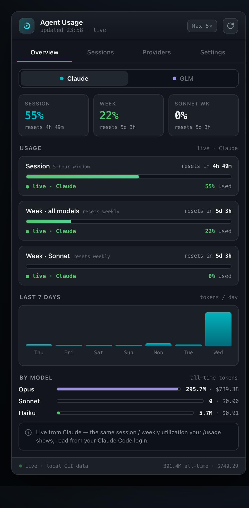
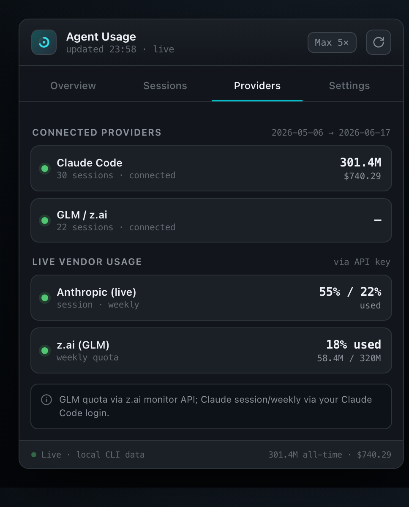
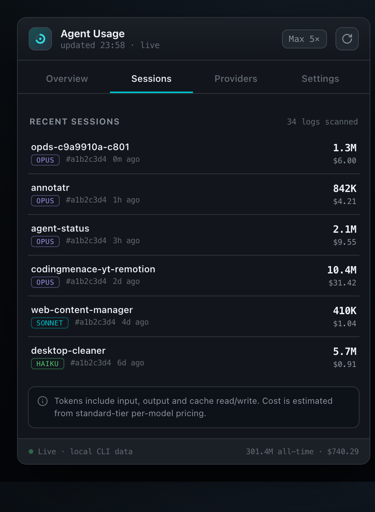
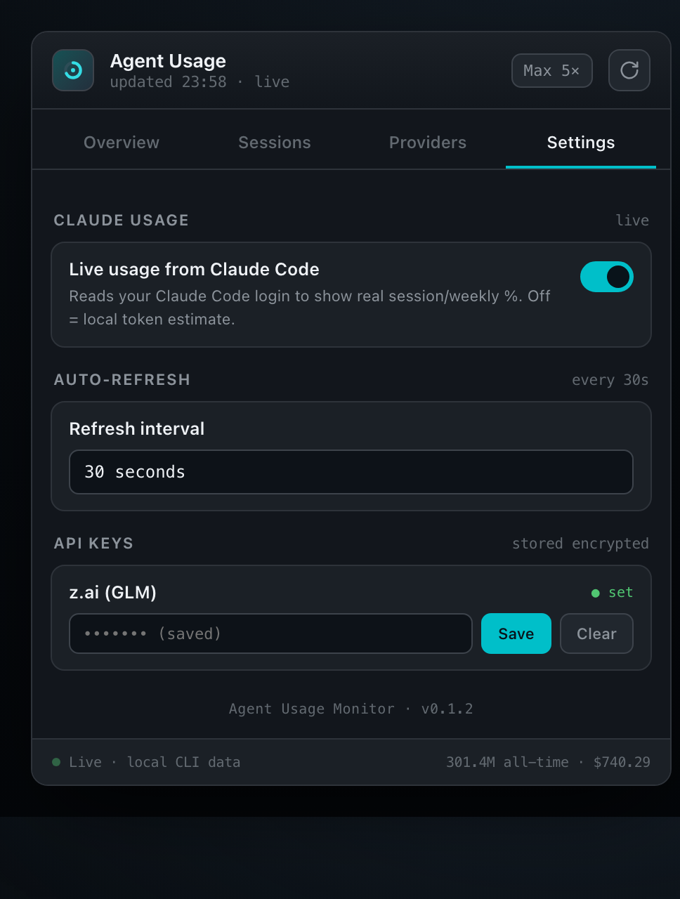

A lightweight macOS widget that shows the real Claude Code session & weekly limits your /usage reports — plus GLM Coding Plan quota, token spend, cost and per-session history. Reads your local logs; no dashboards, no guessing.

/usage exactly
Keys encrypted on-device
Refreshes only when open
Native menubar widget
Everything in one dropdown
Claude Code and GLM both meter you differently and bury it behind a slash command or a browser tab. This pulls it all into one glance from the menu bar.
Session (5-hour) and weekly utilization pulled live from your Claude Code login — the exact percentages and reset times /usage shows, not an estimate.
Real 5-hour & weekly token quota from z.ai's monitor API, in the same view. Add your coding-plan key and it lights up next to Claude.
A 7-day token chart, per-model breakdown (Opus / Sonnet / Haiku), recent sessions and estimated cost — straight from your local ~/.claude logs.
API keys are sealed with AES-256-GCM and bound to your machine — never written in plaintext, never sent anywhere but the vendor.
Refreshes the instant you open it and on a gentle interval while open — then goes silent when collapsed. No background polling, no battery drain.
A ~6 MB Tauri app with a Rust core. Menubar template icon, launch-at-login, and signed auto-updates. No Electron, no bloat.
Four tabs, zero clutter
Live session / weekly / per-model meters with reset countdowns and the 7-day spend chart.

Claude and z.ai side by side, with live vendor numbers when a key is set.

Every recent session with project, model, tokens and estimated cost.

Toggle live Claude usage, set the refresh interval, and store provider keys encrypted.
How it works
A Rust core reads ~/.claude/projects/*.jsonl and z.ai logs locally — exact token counts, per session and per model. Nothing leaves your machine.
With your existing Claude Code login it reads the same usage endpoint the status bar uses, so the % and reset times match your plan precisely.
Click the icon for a fresh read; it refreshes while open and rests when closed. Launches at login and updates itself.
Honest by design: the app never invents a number. Where a real value isn't available, it says so.
Get it
Grab the signed DMG from Releases, or build it yourself. It updates automatically after that.